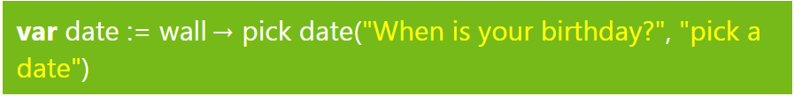

User Input
User Input allows us to get information we need from users
Interactive Lesson: Click Here
We will learn how to get an input from the user using the "Wall" service in TouchDevelop. User input is an essential part of programming because it makes a program interactive by asking input from the user. We will take a look on how we are able to request for an input from the user in TouchDevelop
Using 'Ask String'
In the above example, we created a variable called 'name' and assign the 'Wall -> ask string(string input)' service.The 'name' variable saves the user input so we are able to access it later on in the program!
In the example above, we create a new variable 'greetuser', which concatenate (add) two strings together using the "||" operator. The result of greetuser will be "Hello 'user's input' ".
Using 'Ask Number'
Equivalent output
In this example, we ask the user for his/her age and save it in a variable called 'age'. We then use the data stored in 'age' to create a new string variable 'age_output'!
Using 'Ask Boolean'
Equivalent Output:
In this example, we ask the user if he/she fun programming fun and the answer is either a 'Yes' or 'No'. However do take note that the value 'answer' stores will be either a 'True' or 'False' and not 'Yes' or 'No'
Using 'Pick Date'
Equivalent Output:
In this example above, we used the 'pick date' services to get our user to input his/her birthday and we save it in a variable 'date'.
Conclusion
- User Input is important because it makes your program interactive!
- You can request information that you need from the user!
- We can choose a variety of actions from 'Wall' to request an information from the user such as:
- ask string
- ask number
- ask boolean (True or False)
- pick date (Allow user to pick a date in the format of 'mm/dd/yy')
- pick time
- pick string (Different from 'ask string')
There are more actions that 'Wall' can provide and you should explore it on your own!